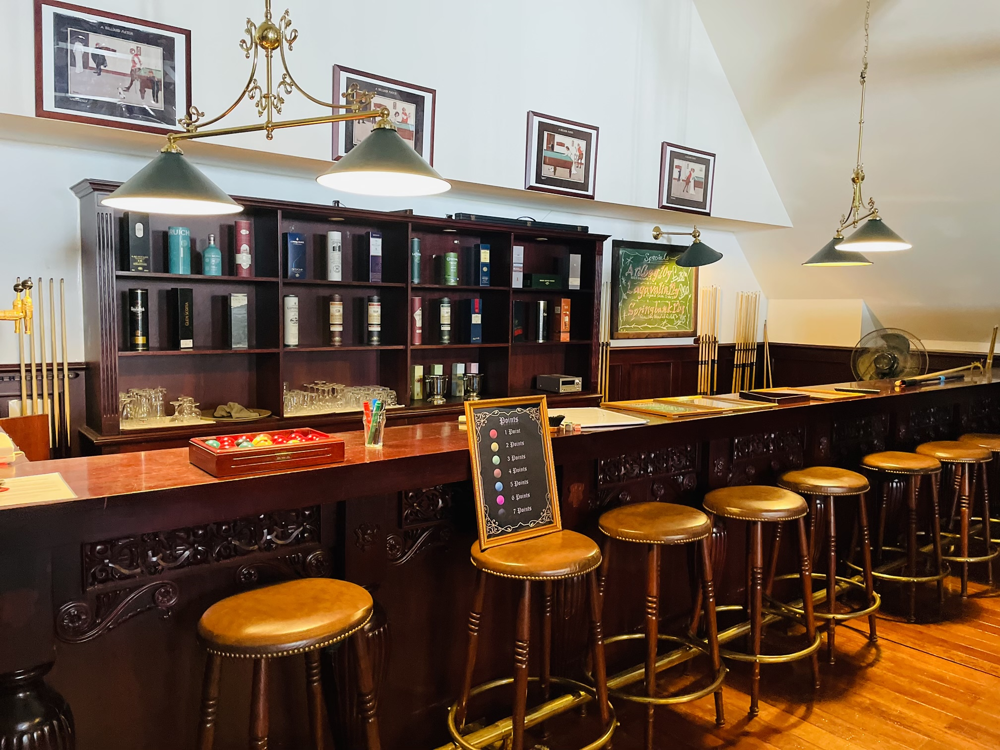

Hobbies
This page posts my hobbies and my daily life!
Movies
Recently watched
-
Catch me if you can
-
Before SUNRISE
-
Green Mile
Favorite
-
Green Book
-
Violet Evergarden
-
Spiderman3
Books
Recently read
-
The ABC murders
-
方舟
-
World Trigger
Favorite
-
十角館の殺人
-

六人の嘘つきな大学生
-
ハサミ男
Items
Recently bought
-
Arc'teryx beta AR
-
Leather tote-bag
-
PS5 Spiderman2
Spots
Recently visited
-

江の島
-

銀山温泉
-

British Hills
Favorite
-
渋谷-さくら坂
-
石川県立図書館
-
東京駅